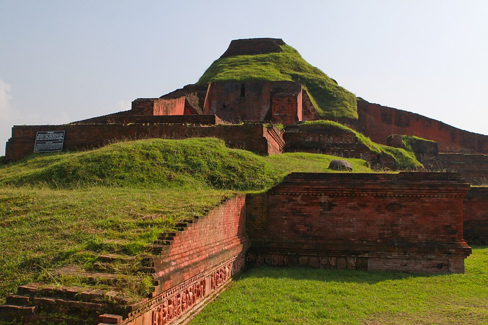
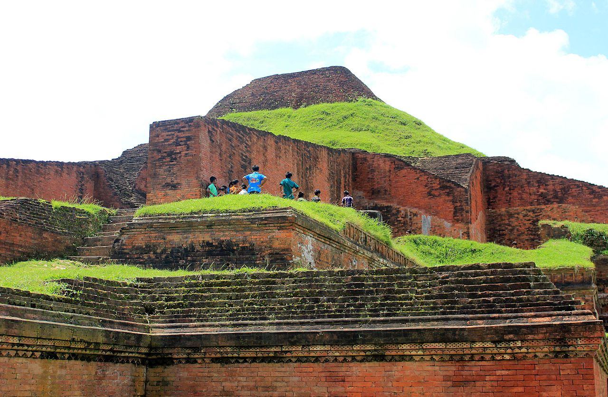
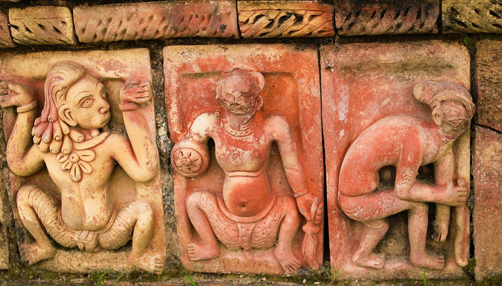
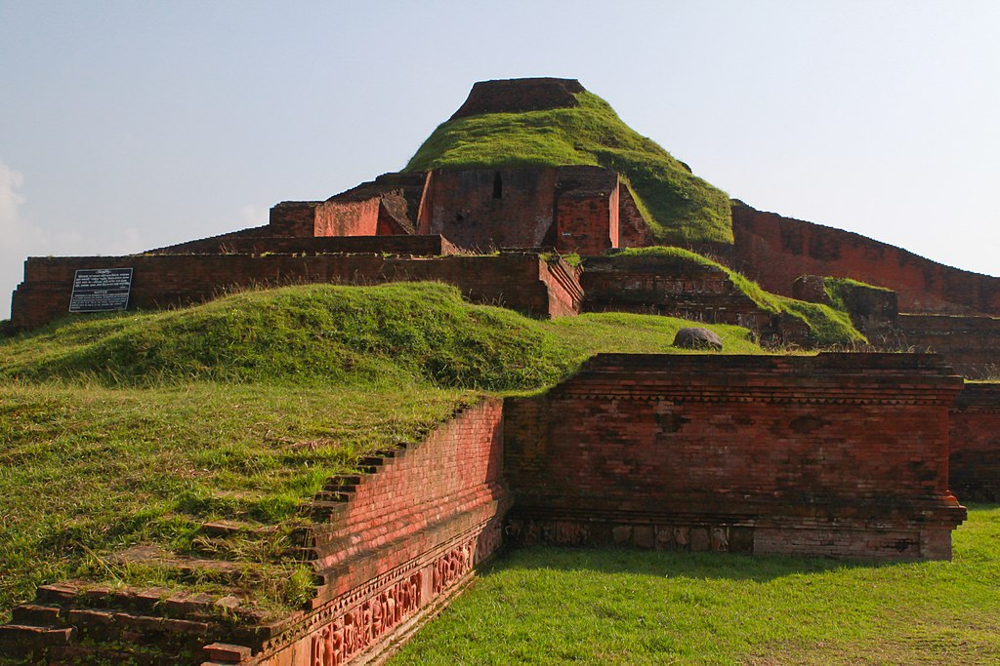
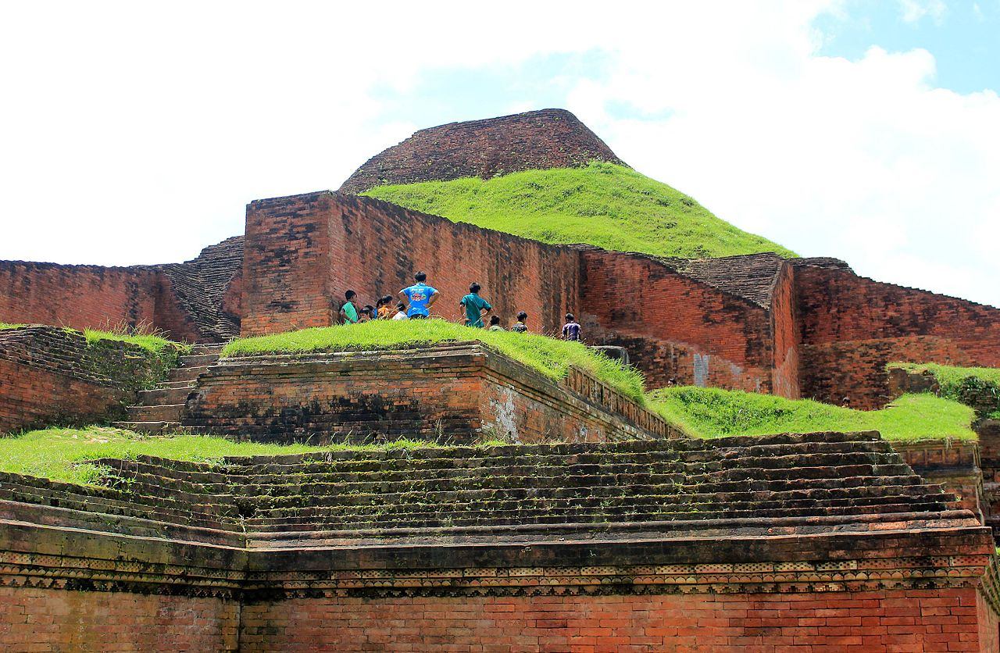
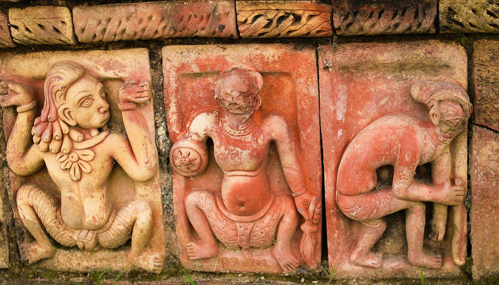

Sompur Bihar
 





About Sompur Bihar
Somapura Mahavihara (Bengali: Shompur Môhabihar) in Paharpur, Badalgachhi Upazila, Naogaon District, Bangladesh is among the best known Buddhist viharas in the Indian Subcontinent and is one of the most important archaeological sites in the country. It was designated as a UNESCO World Heritage Site in 1985. It dates from a similar time period to the nearby Halud Vihara and to the Sitakot Vihara in Nawabganj Upazila of Dinajpur District.
The quadrangular structure consists of 177 cells and a traditional Buddhist stupa in the centre. The rooms were used by the monks for accommodation and meditation. In addition to the large number of stupas and shrines of various sizes and shapes, terracotta plaques, stone sculptures, inscriptions, coins, ceramics etc. have been discovered.
Location
Paharpur, Badalgachhi Upazila, Naogaon District, Bangladesh
Description
A number of monasteries grew up during the Pāla period in ancient India in the eastern regions of the Indian subcontinent, comprising Bengal and Magadha. According to Tibetan sources, five great Mahaviharas stood out: Vikramashila, the premier university of the era; Nalanda, past its prime but still illustrious; Somapura Mahavihara; Odantapurā; and Jaggadala. The monasteries formed a network; "all of them were under state supervision" and there existed "a system of co-ordination among them ... it seems from the evidence that the different seats of Buddhist learning that functioned in eastern India under the Pāla were regarded together as forming a network, an interlinked group of institutions," and it was common for great scholars to move easily from position to position among them. Xuanzang of China was a noted scholar who resided at the Somapura Mahavihara (the largest monastery in ancient India), and Atisa traveled from Bengal to Tibet to preach Buddhism. The earliest form of the Bengali language began to the emerge during the eighth century. The excavation at Paharpur, and the finding of seals bearing the inscription Shri-Somapure-Shri-Dharmapaladeva-Mahavihariyarya-bhiksu-sangghasya, has identified the Somapura Mahavihara as built by the second Pala king Dharmapala (circa 781 to 821) of Pala Dynasty.
Entry Fees
No Entry Fees.
Visiting Hours
Always open for visitors.